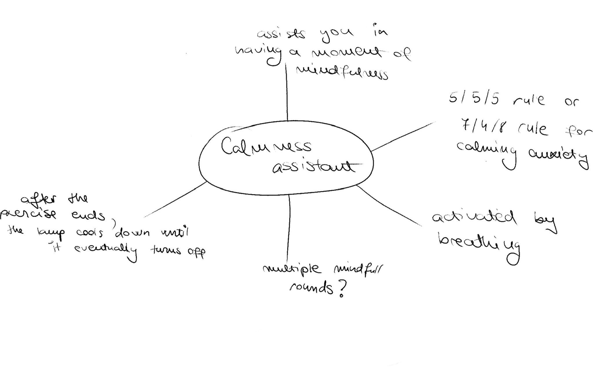
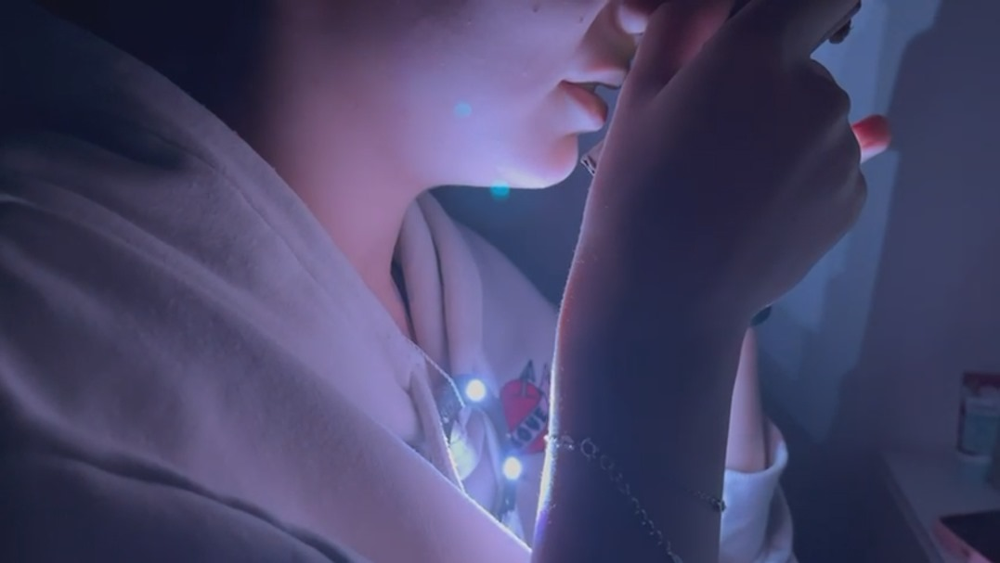

Interactive Portable Lamp for Mindfulness Practice
Challange
The challenge was to conceptualize and design an interactive lamp that embodied the essence of mindfulness and tranquility. The project sought to leverage Arduino sensors to create a dynamic user experience that promotes relaxation and mental well-being.
Solution
The solution concept is centered around crafting a light-based mindfulness guide that seamlessly integrates with users' meditation practices. Drawing inspiration from the Apple Watch's Mindfulness app and the 5/5/5 breathing method, the lamp offers a serene guide through the art of mindful breathing. Utilizing intensity-based light transitions, the lamp gently guides users through breathing phases, fostering a sense of calm and presence.
Tools and Resources
- Arduino Uno with Bluetooth module
- NeoPixel LED ring
- Temperature sensor
- Proximity sensor
- Gesture sensor
- Arduino IDE for programming
Features
- Intensity-based light transitions synchronized with breathing phases
- Seamless integration with meditation practices
- Portable and discreet design for everyday use
- Tactile connection through necklace or handheld accessory
The Outcome
The outcome of the project was a prototype of a portable interactive lamp poised to guide users through moments of mindfulness and relaxation. Through design and coding, the team created a tangible embodiment of the meditative experience, inviting users to connect with their breathing and embrace tranquility.
The Story
The design process kicked off with immersive brainstorming sessions, where my colleague and I delved deep into exploring various ideas and potential applications for our interactive lamp. These sessions weren't solely focused on generating ideas; they involved delving into the nuanced connection between technology and mindfulness.
As we brainstormed, we found ourselves exploring a wide range of possibilities. We considered traditional use cases for lamps, such as lighting up a room, but we also tried ventured into more unconventional territory. Ideas sparked and evolved as we pondered the lamp's potential in diverse scenarios. We envisioned a lamp mirroring the weather outside, a visual representation of light states like sunset or sunrise, and even a hands-free lamp adjusting to workspace ambiance. One particularly intriguing concept was a community lamp—a network of lamps fostering non-verbal communication.
To aid brainstorming, we created visual aids like diagrams and sketches to visualize our ideas. These helped us map out potential features and interactions for the lamp. Research was also conducted into existing projects and technologies to gain inspiration and insight into what was possible and what was already out there.
The brainstorming sessions were complemented by hands-on exploration of Arduino sensors. We experimented with different sensors, such as the temperature sensor, gesture sensor, and proximity sensor, to understand their capabilities and limitations.
Through this process of exploration and experimentation, we uncovered unexpected insights. For example, while testing the temperature sensor, we discovered a correlation between breath patterns and temperature changes—a revelation that inspired the core concept of our project: a light-based mindfulness guide synchronized with the user's breath.
Following brainstorming and exploration phase, the next stage was testing and refinement. Given the constraints of the project, including a limited timeframe and a small team of only two testers, internal testing became a crucial component of our process. With time at a premium, internal testing allowed us to quickly iterate on our design and address any immediate issues or concerns. Additionally, we recognized the importance of external user testing to gather diverse perspectives and validate our design decisions. Conducting external testing provided us with valuable insights into how users interacted with the lamp in real-world scenarios, allowing us to fine-tune the design and ensure its effectiveness in practice.
User feedback prompted us to refine the interaction, ensuring smoothness and comfortable light speed. We also introduced distinct colors for different stages in the 5/5/5 method, enhancing clarity and usability. These adjustments improved the overall user experience, concluding the testing phase with confidence in our interactive lamp design.